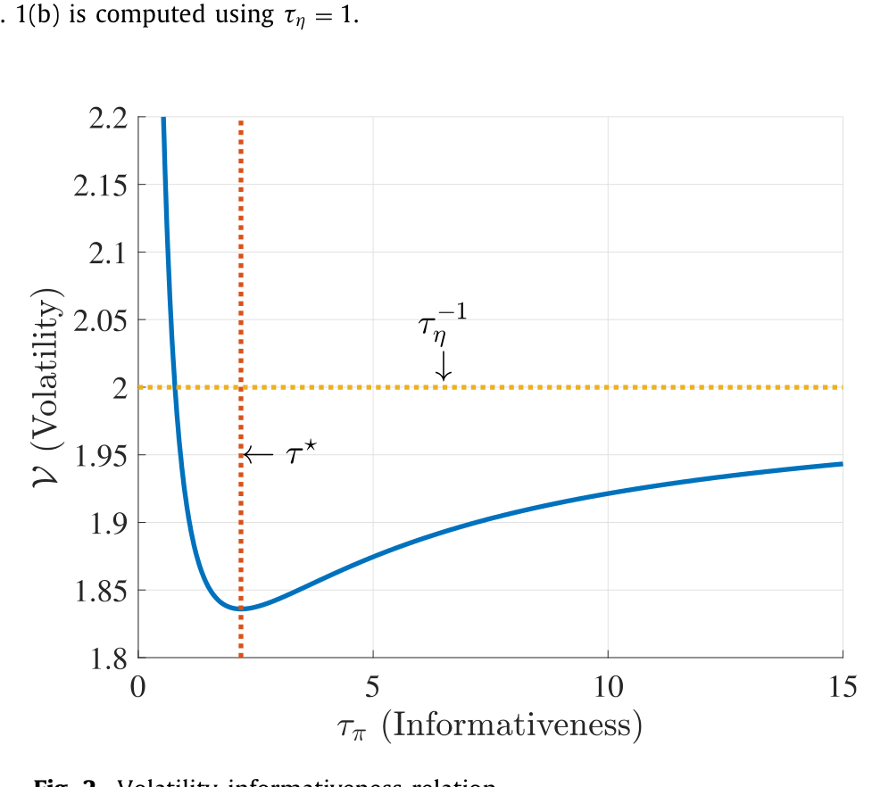
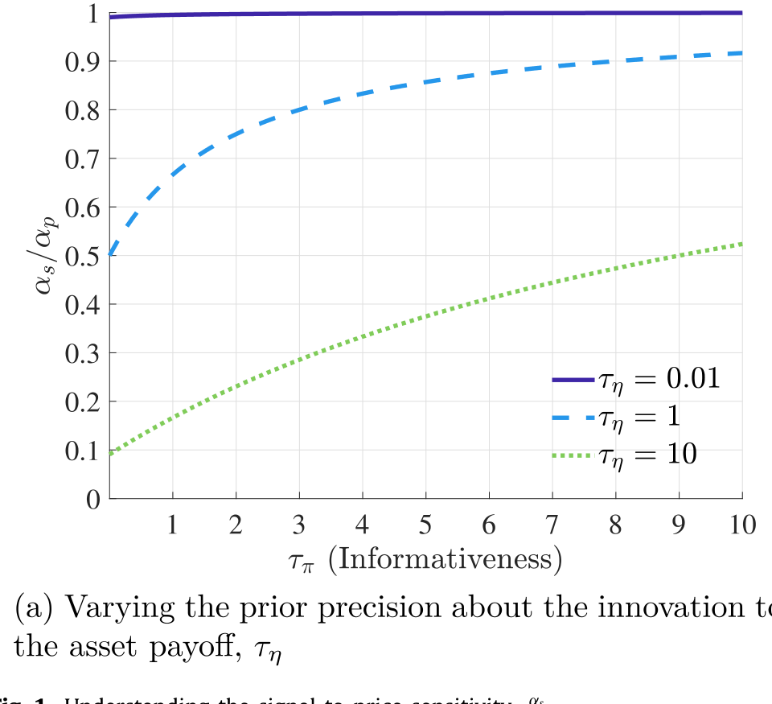
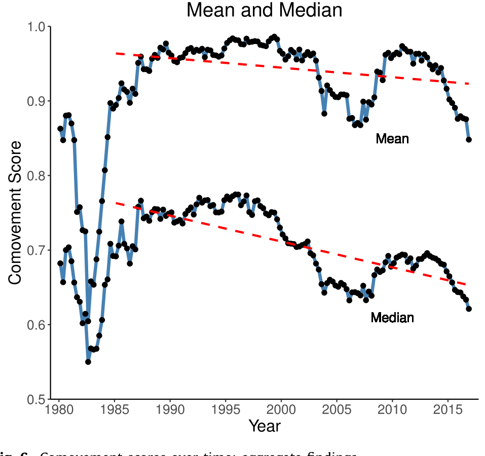
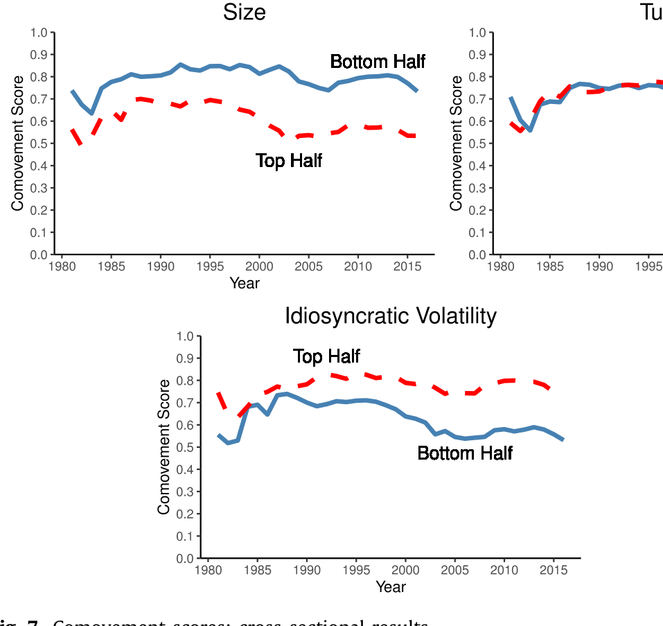
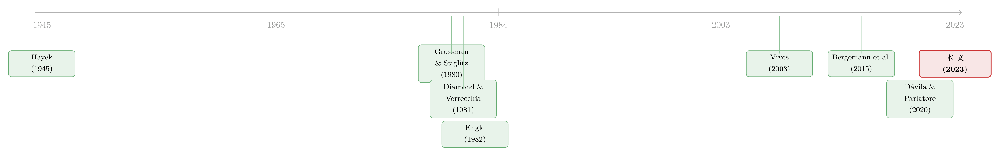

波动率，真的能当「信息」的尺子用吗？
本文读的是 Dávila & Parlatore (2023, Journal of Financial Economics)：价格波动率与价格信息含量之间，并不存在一个固定符号的关系。它由两条方向相反的渠道（噪声削减与均衡学习）共同决定——当信息含量已经足够高时，二者正向同动；足够低时，则负向同动。作者把这件事浓缩成一个叫「同动得分（comovement score）」的统计量，用它来判断：对一只具体的股票，「波动率上升」到底是好消息（更有信息）还是坏消息（更多噪声）。
1 一个被默认了几十年的等号
先说一件几乎所有做实证的人都干过、却很少认真追问过的事。
我们想知道一只股票的价格里到底含有多少关于未来基本面的信息——也就是所谓的价格信息含量 (price informativeness)。可这东西看不见摸不着：它是一个均衡对象，只能间接地「推断」出来。于是大家退而求其次，找了一个唾手可得的替身——价格波动率 (price volatility)。波动率好算啊，一段收益率序列的方差，几行代码就出来了。
久而久之，「波动率高 ≈ 信息多」就成了一条心照不宣的默认规则。作者在引言里就引了一句很扎眼的话：Campbell et al. (2022) 在一篇关于特质波动率的综述里写道，「特质波动率充当了公司层面信息流的实证代理变量」。换句话说，主流文献是真的把波动率当成信息含量的尺子在用。
但这把尺子，准吗？
这就是全文要死磕的【那一个问题】。而它给出的答案，远比「准」或「不准」更有意思：这把尺子有时正着用、有时反着用，而且你能事先算出来该正着还是反着。
2 两条方向相反的渠道
要把这件事讲清楚，得先回到一个最朴素的直觉冲突上。
一方面，价格越有信息，意味着投资者私人信号里的「真东西」被更多地写进了价格，价格作为信号越精确——那噪声占的比重就越小，价格的（特质）波动应该下降才对。作者把这条渠道叫做噪声削减 (noise-reduction) 渠道。这条线说：信息↑ → 波动↓，二者负相关。
可另一方面呢？接着，一个自然的问题是：投资者为什么会更看重价格？因为价格更有信息了。于是当信息含量上升时，每个投资者都更愿意把价格当成判断 payoff 的信号，把需求更多地压在「价格透露了什么」上。结果是——所有人的需求变得更相关、更同向，价格对总体 payoff 实现的敏感度被放大，价格波动反而上升。这就是均衡学习 (equilibrium-learning) 渠道：信息↑ → 波动↑，二者正相关。
两条渠道，一个往下拽，一个往上推。波动率到底跟着信息含量往哪边走，取决于此刻是谁的力气更大。
这里有个微妙之处值得停一下：均衡学习渠道之所以存在，是因为投资者「从价格里学习」。如果投资者根本不看价格、只信自己的私人信号，这条渠道就熄火了，只剩噪声削减——那波动率才会乖乖地与信息含量负相关。正是「学习」这件事，把符号搅成了一笔糊涂账。
然后，关键的判断出现了。作者证明：当价格已经足够有信息时，均衡学习渠道会压倒性地占上风，于是波动-信息关系是向上倾斜的；而当价格足够没信息时，噪声削减渠道主导，关系向下倾斜。

Figure 2: Volatility-informativeness relation
也就是说，波动率与信息含量的关系不是一条固定符号的曲线，而是先降后升（或者说存在一个拐点）：在低信息的那一端，两者背道而驰；越过某个门槛进入高信息区，两者携手同行。
3 模型：信号与噪声，如何被揉进同一个价格
要让上面的故事站得住脚，得有一个能把「信息」和「波动」同时写出来的均衡模型。作者搭的是一个相当干净的竞争性交易模型——本质上是一个反复进行的静态理性预期经济。我们一步步来。
偏好与资产。 每期有一个单位测度的投资者出生，活两期，具有常绝对风险厌恶 (CARA) 偏好：
$$U(w) = -e^{-\gamma w},$$
其中 \(\gamma>0\) 是绝对风险厌恶系数。市场上有一个无风险资产（毛回报 \(R\) 归一化为 1）和一个固定供给 \(Q\) 的风险资产。
payoff 与信号。 风险资产的 payoff 服从
$$\theta_{t+1} = \mu_\theta + \rho\,\theta_t + \eta_t,$$
这里 \(|\rho|\le 1\)，\(\theta_0=0\)，\(\eta_t\) 是对下一期 payoff 的创新（innovation）。注意一个记号上的小心机：创新写成 \(\eta_t\) 而非 \(\eta_{t+1}\)，是为了强调投资者在 \(t\) 期交易前可以对它学习。每个投资者 \(i\) 拿到一个关于 \(\eta_t\) 的私人信号：
$$s_t^i = \eta_t + \varepsilon_{s,t}^i,\qquad \varepsilon_{s,t}^i \sim N\!\left(0,\,\tau_s^{-1}\right).$$
噪声从哪来？ 这是全模型最妙的设定。投资者持有异质的「先验」，从 \(i\) 的视角看，
$$\eta_t \sim_i N\!\left(\bar\eta_t^{\,i},\,\tau_\eta^{-1}\right),\qquad \bar\eta_t^{\,i} = n_t + \varepsilon_{u,t}^i.$$
每个人先验均值里有两块：一块是市场层面的共同情绪 \(n_t \sim N(\mu_n,\tau_n^{-1})\)，一块是个人特质 \(\varepsilon_{u,t}^i\)。关键在于，投资者看不见 \(n_t\)。于是当价格很高时，他分不清究竟是 \(\eta_t\)（真利好）高，还是 \(n_t\)（一波集体亢奋）高。正是这个共同情绪 \(n_t\)，扮演了「噪声」的角色，让价格无法完全揭示信息。
均衡价格。 在线性策略下，投资者的需求形如 \(q_{1,t}^i = \alpha_\theta\theta_t + \alpha_s s_t^i + \alpha_n \bar\eta_t^{\,i} - \alpha_p p_t + \psi^i\)，市场出清后得到均衡价格（论文式 (2)）。我们把这个最核心的方程拆开看：
从价格里把信息「读」出来。 一个只观察到 \(\theta_t\) 的外部观察者，可以把已知项剥掉，构造一个关于 \(\eta_t\) 的无偏信号 \(\pi_t\)（论文式 (3)）。一步步来：先从价格里减掉 \(\frac{\alpha_\theta}{\alpha_p}\theta_t\) 和常数项，再乘以 \(\frac{\alpha_p}{\alpha_s}\)，剩下的是 \(\eta_t + \frac{\alpha_n}{\alpha_s}n_t\)；最后扣掉 \(\frac{\alpha_n}{\alpha_s}\mathbb{E}[n_t]\)，就得到
$$\pi_t = \eta_t + \frac{\alpha_n}{\alpha_s}\left(n_t - \mathbb{E}[n_t]\right),$$
它满足 \(\mathbb{E}[\pi_t\mid\eta_t]=\eta_t\)。看这个式子：信号 \(\pi_t\) 等于真值 \(\eta_t\) 加上一团噪声，而噪声的大小由比值 \(\frac{\alpha_n}{\alpha_s}\) 决定。
两个均衡对象，正式登场。 于是价格信息含量被定义为这个无偏信号的精度：
$$\tau_\pi \equiv \left(\mathrm{Var}[\pi_t\mid\eta_t,\theta_t]\right)^{-1} = \left(\frac{\alpha_s}{\alpha_n}\right)^2 \tau_n.$$
而价格波动率，就是价格的条件特质方差：
$$V \equiv \mathrm{Var}[p_t \mid \theta_t].$$
到这里，故事的骨架就清楚了：\(\eta_t\) 的加载 \(\alpha_s\) 同时出现在「信息」和「波动」里——它一边决定价格含多少真信息，一边决定价格对 \(\eta_t\) 有多敏感。两个看似无关的量，被同一组均衡系数死死地绑在了一起。这也正是为什么作者要采取一种「不走寻常路」的方法论：先研究两个内生变量之间的均衡关系，再去谈比较静态。

Figure 1: Understanding the signal-to-price sensitivity, α s
更进一步，作者证明这两条渠道、乃至整个同动区域，最终都可以只用两个尺度不变的精度比值来刻画：一个信号-payoff 比 (signal-to-payoff ratio) 和一个噪声-payoff 比 (noise-to-payoff ratio)。能用如此少的几个量就把「任意参数变动下波动与信息往哪边走」框死，这在读惯了 Vives (2008) 那种「波动率和信息含量各算各的比较静态」的人看来，多少有点出乎意料——因为按老路子读下来，你会以为这两者之间根本没有系统性的关系。
4 同动得分：把理论翻译成一个能算的数
理论再漂亮，落不了地也白搭。但真正关键的一步在于，作者把上面的「正同动区 / 负同动区 / 模糊区」翻译成了一个连续的、可估计的统计量——同动得分。
它的设计思想很直白：一只股票离正同动区越近，得分越接近 1，意味着「波动率上升 = 信息含量上升」越可信；离负同动区越近，得分越接近 0，意味着「波动率上升」更可能反映的是信息含量的下降。处在中间模糊区的股票，得分就在 0.5 附近徘徊。
怎么估？作者证明了一个很实用的结果：把资产价格的变化对资产 payoff 的变化做线性回归，用回归得到的系数与 R 方的一个特定组合，就能一致地估计出信号-payoff 比和噪声-payoff 比，进而算出同动得分。于是，原本玄之又玄的「价格信息含量」，第一次能借着波动率被反推出来——前提是你得先知道这只股票落在哪个同动区。
5 数据告诉我们什么
作者用 1961–2017 年的季度数据，对每只股票跑滚动时间序列回归，得到一整面板的同动得分。几个事实值得记住：
横截面上，大约 14% 的估计得分落在负同动区附近（29% 的得分低于 0.5），而大约 40% 落在正同动区附近（71% 的得分高于 0.5）。也就是说，对多数股票，波动率确实是个还算靠谱的信息代理——但有相当一批（那 29%）不是，对它们而言「波动率↑」很可能是在告诉你信息在变少。
时间序列上，同动得分的均值和中位数自 1980 年代中期以来稳步下降。透过这个框架看，这意味着：在近些年，波动率的变化越来越不可能与信息含量同向。与此同时，同动得分的横截面离散度在上升。两件事合在一起，传达的信息是一致的——拿波动率去推断信息含量这件事，正变得越来越不能想当然，必须 case-by-case 地做。

Figure 6: Comovement scores over time: aggregate findings
谁的得分高？ 横截面回归显示，那些 (i) 规模小、(ii) 账面市值比 (book-to-market) 高、(iii) 特质波动率高、(iv) 机构持股份额低的股票，同动得分更高。换句话说，对这些「小、价值、波动大、散户多」的股票，用波动率当信息尺子反而更靠谱。而且作者强调，这些横截面规律在时间上异常稳定。

Figure 7: Comovement scores: cross-sectional results
还有一个统一的解释贯穿始终：无论是时间序列的趋势还是横截面的差异，主要都来自噪声-payoff 比的变化，而非信号端。是噪声在变，把同动得分一路往下拽。
（关于特质波动率本身能不能被看作信息的代理、它的可预测性几何，可参见《「波动率之谜」其实是一道预测题：当鞅模型预报失灵》；而关于价格反过来「喂养」实体决策与预期的反馈逻辑，可参见《从马嘴里掏答案：直接问 4641 家公司，它们到底有没有在「看价格做决策」》。）
6 文献脉络
这条线的源头，通常被追溯到 Hayek (1945) 那篇关于「市场如何聚合分散信息」的经典。沿着这个范式，Grossman & Stiglitz (1980) 给出了「信息有效市场不可能存在」的著名悖论，Hellwig (1980) 与 Diamond & Verrecchia (1981) 则把噪声理性预期均衡的框架打磨成型。这一支后来由 Vives (2008) 等综述集大成——但正如本文反复指出的，教科书的处理是把波动率和信息含量分开做比较静态，从未系统地追问二者之间的关系。

与此同时，另一条几乎平行的脉络在测量波动率本身：Engle (1982) 的 ARCH 模型点燃了整个金融计量经济学对波动率建模的热情，Campbell et al. (2001) 把特质波动率推上了实证舞台。这两条线长期各走各的——一边研究「信息」，一边研究「波动」，却很少有人把它们正式接上。
最贴近本文精神的，是 Bergemann et al. (2015)：他们在一个抽象的线性-二次环境里证明，使总体波动率最大化的信息结构，恰恰是让人们混淆特质冲击与总体冲击、对总体冲击过度反应的那种。不过他们关心的是「不同信息结构如何改变内生变量的矩」，而本文反过来，要刻画的是「信噪比这个不可观测的内生变量」与「波动率这个唾手可得的内生产物」之间的均衡关系。再往前一步，作者自己的 Dávila & Parlatore (2020) 提供了识别和估计股票层面信息含量的方法，本文则在此基础上，给出了一个用波动率去推断信息含量变化的新统计量。
7 评论与延伸（Q&A + 研究方向）
(a) 几个可能的疑问
Q：这和「波动率就是风险」是一回事吗？
不是。本文的波动率是给定过去公开信息后，价格的条件特质方差 \(V=\mathrm{Var}[p_t\mid\theta_t]\)，而且作者明确说在这个设定里条件价格波动与条件收益波动是一一对应的。它关心的是波动率作为「信息聚合能力」的镜子，而非作为风险溢价的来源——后者是 Campbell 等那条波动率文献的重点，两者问题意识不同。
Q：「均衡学习渠道」凭什么能盖过「噪声削减渠道」？这不是循环论证吗？
关键在「足够有信息」这个条件。当信息含量已经很高，投资者把更大权重压在价格信号上，需求的相关性急剧增强，价格对总体 \(\eta_t\) 的敏感度被非线性地放大；而此时噪声本就所剩无几，再削减空间也有限。两股力量一个边际递增、一个边际递减，越过门槛后学习渠道自然胜出。这不是假设，而是命题推出的结果。
Q：同动得分接近 0.5 的股票该怎么办？
这正是作者诚实的地方：模糊区里波动率几乎没有判别力。同动得分的价值恰恰在于，它先告诉你哪些股票别用波动率瞎推断。对得分接近 1 的股票放心用，对接近 0 的反着读，对 0.5 附近的——老老实实换别的办法。
Q：「同动得分整体下降」是不是就等于「市场变笨了」？
不能这么读。得分下降说的是「波动率变化越来越不能反映信息含量的同向变化」，而作者把这主要归因于噪声-payoff 比的变化，而非信号端的恶化。市场是不是更有信息了，是另一个问题（Bai et al. 2016、Farboodi et al. 2019 各执一词）；本文谈的是「用波动率这把尺子，可靠性在下降」。
Q：估计用的是「价格变化对 payoff 变化」的回归，可 payoff 本身就难测，会不会一步错步步错？
这是最实在的隐忧。整套估计建立在能观测到 \(\theta_t\) 的变化之上，而会计意义上的 payoff 测量误差、\(\rho\) 的设定、滚动窗口的长度，都会渗进系数与 R 方的那个组合里。作者用横截面规律的「异常稳定」来侧面佐证估计不是噪声，但这终究是间接证据。
Q：机构持股越低、同动得分越高——这说明散户让价格更「干净」吗？
恰恰相反，要小心反过来理解。得分高只是说「对这类股票，波动率是信息的好代理」，不等于这类股票本身信息含量高。低机构持股、小盘、高特质波动的股票往往噪声-payoff 比的结构使它们落在正同动区，这是结构位置的问题，不是质量褒贬。
(b) 几个可能的研究问题与提案
1. 把同动得分搬到公司债市场。 【经济故事】公司债价格里同样混着信用基本面信息与流动性噪声，而「债券波动率能否代理信息含量」在信用市场几乎是空白。若噪声主要来自做市商库存与流动性冲击，那债券的同动区结构可能与股票系统性地不同。 【可行性】中。需要 TRACE 的成交价、Compustat/评级的基本面变化来构造「价格变化对 payoff 变化」的回归；难点在债券交易稀疏、payoff 创新难界定。识别上可借本文同样的系数×R 方组合，但要先解决离散交易下的波动率估计。
2. 外资持有人是抬高还是压低同动得分？ 【经济故事】Kacperczyk et al. (2018) 发现外资持有提升了价格信息含量。若外资带来的是「信号端」改善，得分该升；若带来的是套利资金的相关性交易（噪声端），得分反而可能降。这能把「外资改善效率」拆成信号与噪声两条腿。 【可行性】中。需要跨国的机构持股（如 FactSet/原始 13F 之外的国别数据）与本文的同动得分面板做交互。识别难点是外资份额的内生性，需借指数纳入等外生冲击。
3. 同动得分能不能预测「波动率代理」类实证结论的脆弱性？ 【经济故事】无数论文用特质波动率当信息代理跑出了结论。若把这些样本按同动得分分层，得分低（<0.5）那一批的结论是否会反号或消失？这相当于给一大片文献做一次「代理变量是否成立」的体检。 【可行性】高。本文已公开估计方法，可对任一现有研究的样本重算得分并做异质性检验，数据与方法都现成，是最 doable 的一个方向。
4. 用高频数据重估短窗口的同动得分。 【经济故事】本文用季度数据、滚动窗口估计，频率很低。若信息与噪声的相对强弱在日内/事件窗口剧烈变化（如财报日），同动得分本身可能是时变的，甚至在事件前后翻号。 【可行性】中。需要日内价格与基本面冲击的清晰对齐（如盈余意外），识别上要把 payoff 创新窄化到事件窗口，挑战在于 \(\theta_t\) 的高频对应物难找。
8 参考文献与我的判断
我的评价是：这篇论文最大的贡献，不在于哪一个惊人的实证数字，而在于它给一个被默认了几十年的等号装上了一个开关。「波动率≈信息」从来不是恒真也不是恒假的命题，而是依赖于你处在哪个信息区——这个洞见本身就足够干净、足够普适（作者还在在线附录里把它推广到任意线性需求加可加噪声的模型）。同动得分则把这个洞见变成了一件实证工具，让人能对具体资产说出「这把尺子该正着还是反着用」。
对识别的担忧，我有两点。其一，整套估计的命脉是「价格变化对 payoff 变化」的回归，而 payoff 创新 \(\eta_t\) 的实证对应物、以及 \(\rho\) 与窗口长度的设定，都不是中性的——结论里那个「下降趋势」有多少来自真实的噪声结构变化、多少来自测量与设定，值得更细的稳健性。其二，「主要由噪声-payoff 比驱动」是一个强结论，但噪声端在模型里只对应单一的共同情绪 \(n_t\)；现实里的噪声来源（流动性、套利约束、对冲需求）要丰富得多，把它们一股脑塞进一个 \(\tau_n\)，解释力会不会被高估？
后续我最想看到的，是把同动得分接到信用市场与外资持有人上去——前者能检验这套逻辑在远比股票更不透明、噪声结构更复杂的市场里还成不成立，后者能把「外资改善效率」这个老命题拆成信号与噪声两条可分辨的渠道。如果这两件事都做得通，那这篇论文提供的就不止是一个统计量，而是一整套重读「波动率实证」的语言。
参考文献
- Bai, J., Philippon, T., Savov, A. (2016). Have financial markets become more informative? Journal of Financial Economics 122(3), 625–654.
- Bergemann, D., Heumann, T., Morris, S. (2015). Information and volatility. Journal of Economic Theory 158, 427–465.
- Campbell, J.Y., Lettau, M., Malkiel, B.G., Xu, Y. (2001). Have individual stocks become more volatile? An empirical exploration of idiosyncratic risk. Journal of Finance 56(1), 1–43.
- Campbell, J.Y., Lettau, M., Malkiel, B.G., Xu, Y. (2022). Idiosyncratic equity risk two decades later. Critical Finance Review, forthcoming.
- Dávila, E., Parlatore, C. (2020). Identifying price informativeness. Working Paper.
- Diamond, D.W., Verrecchia, R.E. (1981). Information aggregation in a noisy rational expectations economy. Journal of Financial Economics 9(3), 221–235.
- Engle, R.F. (1982). Autoregressive conditional heteroscedasticity with estimates of the variance of United Kingdom inflation. Econometrica 50(4), 987–1007.
- Farboodi, M., Matray, A., Veldkamp, L., Venkateswaran, V. (2019). Where has all the data gone? Working Paper.
- Grossman, S.J., Stiglitz, J.E. (1980). On the impossibility of informationally efficient markets. American Economic Review 70(3), 393–408.
- Hayek, F.A. (1945). The use of knowledge in society. American Economic Review 35(4), 519–530.
- Hellwig, M.F. (1980). On the aggregation of information in competitive markets. Journal of Economic Theory 22(3), 477–498.
- Kacperczyk, M., Sundaresan, S., Wang, T. (2018). Do foreign investors improve market efficiency? Working Paper.
- Vives, X. (2008). Information and Learning in Markets: The Impact of Market Microstructure. Princeton University Press.